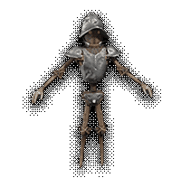

Miguel Arroyo "Wabbaboy"
Roles: Programmer, artist, design, sound design, ideas guy, director? Made this website too.
Main developer of Sorceress, 3D Artist with 3 years of profesional experience in the games outsourcing industry, self taught programmer.
In 2015 Wabba learned that he could make his own games and he's been improving his programming skills ever since, with this newfound knowledge
he's able to make his overambicious fantasy immersive sim a reality, not without help though.
Favourite games: Katamari Damacy, System Shock 2, Dark Souls, Dark Messiah, Deus Ex, Kings Field IV, Fallout: New Vegas, Racing Lagoon, Persona 3, Pokemon Emerald, Final Fantasy IV, Old School Runescape, Path of Exile, Pentiment, Doom Eternal
Eric Juvi "Yorke"
Roles: Narrative design, level design, design consulting/pestering feedback
Developer of indie games Stars Die and Angels Bleeding, first started working on Sorceress' narrative in its earlier stages but has now also moved to level design duties.
Favourite games: Xenogears, Deus Ex, System Shock (1994), Dark Souls, Trails series, Planescape Torment, Pathologic, NieR, Subnautica, Morrowind, Baldur's Gate III, Metal Gear Solid 2/3, Outer Wilds, Disco Elysium, The Eternal Cylinder, Dragon's Dogma, The Wonderful 101, Xenoblade X
